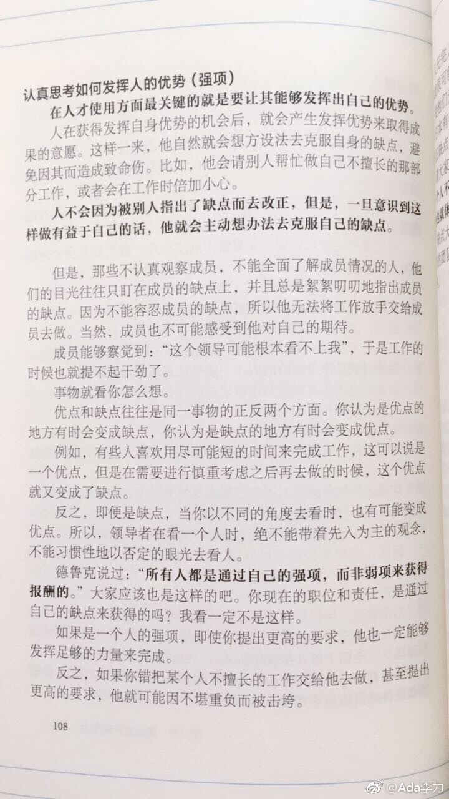

#读书#对柳井正关于发挥人的优势上这事情太有共鸣了。
“在人才使用方面最关键的就是让其能够发挥出自己的优势。”
中国教育其实是一直关注在纠正缺点上，这种风气也影响到企业管理中。经理人更擅长指出员工毛病而不是发现员工的长处和优势。
想起遇到几个资质背景都不错的员工，能力不差，工作态度兢兢业业，也思考过他们为什么没有能做出更大业绩。觉得主要原因之一是他们的精力都花在补自己短板上了，以避免出错。有位跟我分享过毕业后的几年工作，一直都是在领导的挑剔下工作的，现在她见了领导也容易战战兢兢。
但是做出大的业绩，要有创新，要有不断尝试，出错是难免的。出错能够吸取教训，迅速纠正就可以。不能出错的要求，只会得到循规蹈矩的员工。
优势和缺点是一体两面，当优势能真正发挥出来时，他自己会主动意识到去纠正自己的缺点。自己意识不到，别人怎么提醒都没有用。
“在人才使用方面最关键的就是让其能够发挥出自己的优势。”
中国教育其实是一直关注在纠正缺点上，这种风气也影响到企业管理中。经理人更擅长指出员工毛病而不是发现员工的长处和优势。
想起遇到几个资质背景都不错的员工，能力不差，工作态度兢兢业业，也思考过他们为什么没有能做出更大业绩。觉得主要原因之一是他们的精力都花在补自己短板上了，以避免出错。有位跟我分享过毕业后的几年工作，一直都是在领导的挑剔下工作的，现在她见了领导也容易战战兢兢。
但是做出大的业绩，要有创新，要有不断尝试，出错是难免的。出错能够吸取教训，迅速纠正就可以。不能出错的要求，只会得到循规蹈矩的员工。
优势和缺点是一体两面，当优势能真正发挥出来时，他自己会主动意识到去纠正自己的缺点。自己意识不到，别人怎么提醒都没有用。
- 